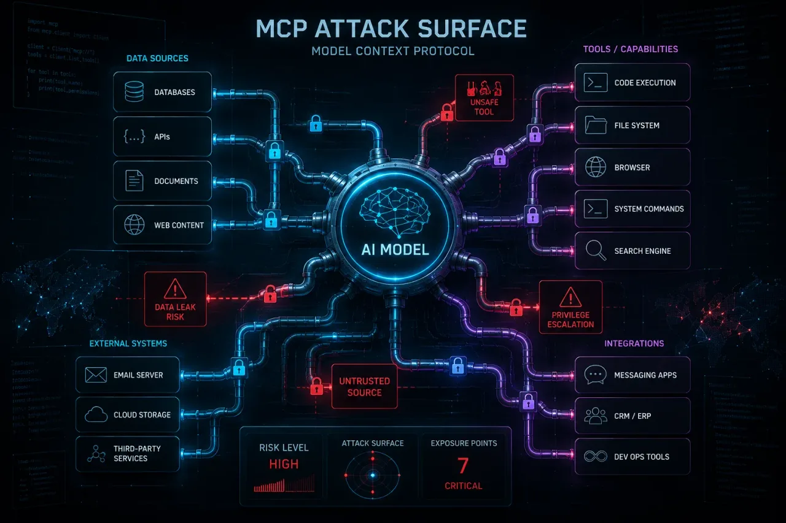

Securing AI, LLMs and agents.
The emerging attack surface, explained: prompt injection, data leakage, red teaming and the defenses that actually help. What LLMs are, what they aren't, and how to use them without becoming a worse engineer.
LLM vs chatbot vs agent: know the difference.
Three words people use interchangeably. They are not interchangeable. Here is the cleanest separation, plus how to tell which one you are using.
Prompt injection, explained.
The #1 risk in the OWASP LLM Top 10, and one you can't patch away. Direct vs. indirect injection, and the defenses that actually help.

5 prompts for self-study that actually work.
For study, productivity, code review, threat modelling. Tested against real material, not generated for a listicle.
AI red teaming, from zero.
How models get stress-tested before they ship, the OWASP LLM risks it targets, and where the ethical and legal lines sit.
Using LLMs to catch phishing.
How language models spot lures that keyword filters miss, where they fit in a pipeline, and the false-positive and privacy limits.

Run an LLM on your own machine.
Why security work pushes you to local models, how to set up Ollama, and what you should never hand to any model.
Agentic AI security: when the LLM can act.
A chatbot that gives bad advice is a nuisance. An agent that acts on it – sends the email, deletes the file – is an incident. What changes.

MCP: the new attack surface for developers.
MCP makes it trivial to connect an LLM to your files, databases and APIs. That convenience is exactly the attack surface.
Deepfakes, explained.
How deepfake video and voice cloning are actually generated, why blink-and-lighting detection is losing ground, and how content provenance standards like C2PA aim to fix it.
Shadow AI, explained.
Employees pasting company data into consumer AI tools is the new shadow IT. How shadow AI creates real data-leak risk, and what governed AI use looks like.
AI and cryptography, explained.
AI can't break AES-256 or RSA-2048. What it can do: attack weak implementations and side channels. Plus the real entropy risk, and the 2024 post-quantum shift.